<title>Expediente 84</title>
<link rel="preconnect" href="https://fonts.googleapis.com">
<link rel="stylesheet" href="https://fonts.googleapis.com/css2?family=Silkscreen&family=Special+Elite&family=Atkinson+Hyperlegible:wght@400;700&display=swap">
<style>
  /* Carpeta de expediente desclasificado: secciones apiladas, cada muestra con su ficha de caso */
  :root {
    --casco: #1d2a3f;
    --hoja: #24334c;
    --bisel: #0f1622;
    --lcd: #c7f0d9;
    --tinta: #42523d;
    --texto: #e6ecf3;
    --suave: #9fb0c6;
    --sello: #e0806a;
    --pixel: "Silkscreen", "Courier New", monospace;
    --maquina: "Special Elite", "Courier New", monospace;
    --cuerpo: "Atkinson Hyperlegible", system-ui, sans-serif;
    color-scheme: dark;
  }
  html, body { background: var(--bisel); }
  body {
    color: var(--texto); font-family: var(--cuerpo); font-size: 16px; line-height: 1.55;
    padding-left: max(16px, env(safe-area-inset-left, 0px));
    padding-right: max(16px, env(safe-area-inset-right, 0px));
    padding-block: 28px 48px;
  }
  main { max-width: 960px; margin: 0 auto; display: grid; gap: 44px; }
  header { display: grid; gap: 10px; }
  .sello {
    justify-self: start; font-family: var(--maquina); color: var(--sello);
    border: 2px solid var(--sello); padding: 2px 10px; letter-spacing: .12em; font-size: 14px;
    transform: rotate(-2deg);
  }
  h1 { font-family: var(--pixel); font-weight: 400; font-size: clamp(30px, 7vw, 48px); margin: 0; line-height: 1; text-wrap: balance; }
  h2 { font-family: var(--pixel); font-weight: 400; font-size: 18px; letter-spacing: .06em; color: var(--lcd); margin: 0 0 6px; }
  p { margin: 0; color: var(--suave); max-width: 68ch; }
  header p { color: var(--texto); }
  section { display: grid; gap: 16px; }
  ul.reglas { margin: 0; padding-left: 1.2em; color: var(--suave); display: grid; gap: 6px; max-width: 72ch; }
  ul.reglas b { color: var(--texto); }

  img.lcd { image-rendering: pixelated; display: block; max-width: 100%; height: auto; border-radius: 4px; }
  .pantalla { background: var(--casco); border-radius: 12px; padding: 10px; }

  .opciones { display: grid; grid-template-columns: repeat(auto-fit, minmax(280px, 1fr)); gap: 18px; }
  .opcion { background: var(--hoja); border-radius: 12px; padding: 12px; display: grid; gap: 10px; align-content: start; min-width: 0; }
  .opcion h3 { margin: 0; font-family: var(--pixel); font-weight: 400; font-size: 15px; display: flex; gap: 10px; align-items: baseline; }
  .letra { background: var(--lcd); color: var(--tinta); padding: 0 7px; border-radius: 4px; }
  .opcion p { font-size: 15px; }

  .fichas { display: grid; grid-template-columns: repeat(auto-fill, minmax(200px, 1fr)); gap: 14px; }
  .ficha { background: var(--hoja); border-radius: 10px; padding: 12px; display: grid; grid-template-rows: 96px auto; gap: 10px; min-width: 0; }
  .ficha .marco { background: var(--lcd); border-radius: 6px; display: grid; place-items: center; overflow: hidden; }
  .ficha img { image-rendering: pixelated; max-height: 80px; max-width: 90%; width: auto; }
  .ficha b { font-family: var(--pixel); font-weight: 400; font-size: 13px; color: var(--texto); display: block; }
  .ficha .caso { font-family: var(--maquina); font-size: 14px; color: var(--suave); display: block; }
  .ficha .antes { font-size: 13px; color: var(--suave); display: block; margin-top: 4px; }
  .ficha .antes em { font-style: normal; color: var(--lcd); }
  .jefes .ficha { grid-template-rows: 150px auto; }
  .jefes .ficha img { max-height: 136px; }

  table { border-collapse: collapse; width: 100%; font-size: 15px; }
  .tabla { overflow-x: auto; }
  th, td { text-align: left; padding: 8px 10px; border-bottom: 1px solid var(--casco); }
  th { font-family: var(--pixel); font-weight: 400; font-size: 12px; color: var(--lcd); letter-spacing: .06em; }
  td:first-child { font-family: var(--pixel); font-size: 13px; white-space: nowrap; }
  td.lcdtxt { font-family: var(--pixel); color: var(--lcd); white-space: nowrap; }

  ol.preguntas { margin: 0; padding-left: 1.4em; display: grid; gap: 8px; color: var(--texto); max-width: 72ch; }
  ol.preguntas li::marker { font-family: var(--pixel); color: var(--lcd); }
  ol.preguntas span { color: var(--suave); }
</style>

<main>
  <header>
    <span class="sello">EXPEDIENTE 84 · PROPUESTA</span>
    <h1>Expediente 84</h1>
    <p>Una estética para Órbita 84: recreativa de los 80 con los ovnis más famosos de la historia como enemigos. Todo está dibujado al tamaño real del juego (84 × 48), con la misma paleta y los dos tonos que ya usamos. Las imágenes están ampliadas.</p>
  </header>

  <section>
    <h2>LAS REGLAS DE LA ESTÉTICA</h2>
    <ul class="reglas">
      <li><b>Cada enemigo es un caso real.</b> Su silueta viene del avistamiento: el Tic Tac del Nimitz embiste rápido, el platillo de Arnold avanza dando saltos, el Triángulo belga es lento y pesado. El comportamiento que ya te gustó se mantiene; solo cambia el dibujo.</li>
      <li><b>Sprites rellenos de recreativa.</b> Contorno en tinta fuerte y detalles en tono medio (cúpulas, luces, ojos). Nada de dibujos de una línea.</li>
      <li><b>Letras gordas para títulos.</b> Trazo de dos píxeles con sombra en tono medio. Las letras chicas quedan solo para el marcador y los textos cortos.</li>
      <li><b>El fondo nunca compite.</b> Estrellas y decorado siempre en tono suave, también en la portada; así no se mezclan con las letras.</li>
      <li><b>Cada nivel es un expediente.</b> El cartel de inicio muestra el caso y el año, por ejemplo «ROSWELL 1947».</li>
    </ul>
  </section>

  <section>
    <h2>PANTALLA DE INICIO: TRES OPCIONES</h2>
    <div class="opciones">
      <div class="opcion">
        <h3><span class="letra">A</span> ABDUCCIÓN</h3>
        <div class="pantalla">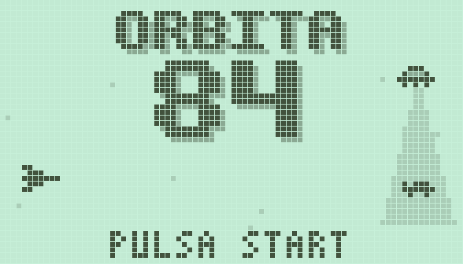</div>
        <p>Título enorme, con el 84 al doble de tamaño. A un lado, un platillo se lleva una vaca con su rayo tractor. Es la más llamativa.</p>
      </div>
      <div class="opcion">
        <h3><span class="letra">B</span> RECREATIVA</h3>
        <div class="pantalla">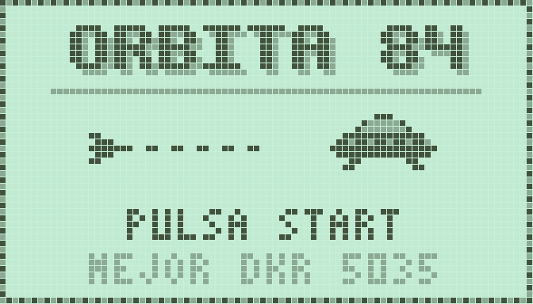</div>
        <p>Marco de cartel de máquina de arcade y el título en una línea. Debajo, tu nave persigue al platillo de Roswell. Muestra tu mejor puntaje con iniciales.</p>
      </div>
      <div class="opcion">
        <h3><span class="letra">C</span> RADAR CLASIFICADO</h3>
        <div class="pantalla">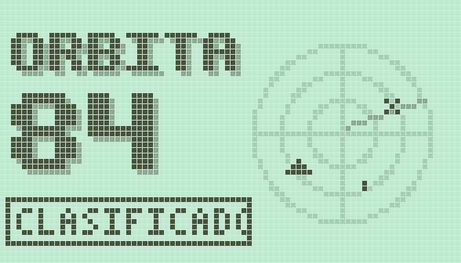</div>
        <p>Título a la izquierda y una pantalla de radar con ecos de ovnis. Abajo, un sello de «CLASIFICADO». Es la más sobria y misteriosa.</p>
      </div>
    </div>
  </section>

  <section>
    <h2>ASÍ SE VERÍA JUGANDO</h2>
    <div class="opciones">
      <div class="opcion">
        <div class="pantalla">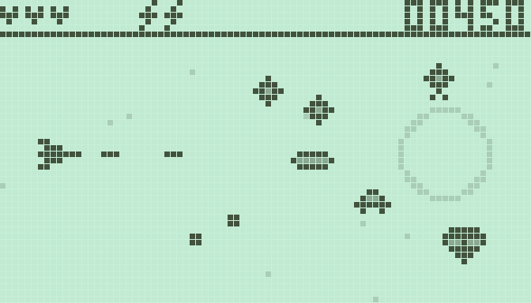</div>
        <p>Nivel 1 con los enemigos nuevos: foo fighters, el Tic Tac, el platillo de Arnold, el diamante y una cabeza gris. El planeta del fondo queda en tono suave.</p>
      </div>
      <div class="opcion">
        <div class="pantalla">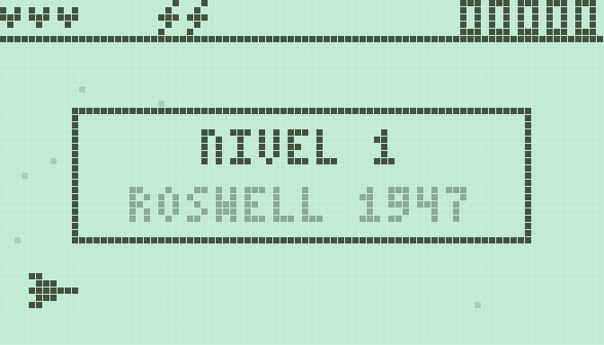</div>
        <p>El cartel de inicio de cada nivel nombra el caso.</p>
      </div>
    </div>
  </section>

  <section>
    <h2>ENEMIGOS</h2>
    <p>Entre paréntesis, el enemigo actual que reemplaza; mantiene su forma de moverse y de atacar.</p>
    <div class="fichas">
      <div class="ficha"><div class="marco"></div><div><b>FOO FIGHTER</b><span class="caso">Bolas de luz de la Segunda Guerra, 1944</span><span class="antes">(<em>chispa</em>) busca tu altura</span></div></div>
      <div class="ficha"><div class="marco">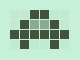</div><div><b>PLATILLO DE ARNOLD</b><span class="caso">1947: «como un plato rebotando en el agua»</span><span class="antes">(<em>medusa</em>) avanza ondulando</span></div></div>
      <div class="ficha"><div class="marco">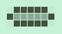</div><div><b>TIC TAC</b><span class="caso">Portaaviones Nimitz, 2004</span><span class="antes">(<em>dardo</em>) se alinea y embiste</span></div></div>
      <div class="ficha"><div class="marco">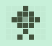</div><div><b>DIAMANTE</b><span class="caso">Caso Cash-Landrum, Texas 1980</span><span class="antes">(<em>rombo</em>) dispara apuntado</span></div></div>
      <div class="ficha"><div class="marco">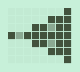</div><div><b>TRIÁNGULO BELGA</b><span class="caso">Ola ovni de Bélgica, 1989</span><span class="antes">(<em>caparazón</em>) lento, recto y abanico</span></div></div>
      <div class="ficha"><div class="marco">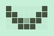</div><div><b>V DE PHOENIX</b><span class="caso">Luces de Phoenix, Arizona 1997</span><span class="antes">(<em>planeador</em>) suelta bombas</span></div></div>
      <div class="ficha"><div class="marco">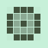</div><div><b>ORBE DE HESSDALEN</b><span class="caso">Luces del valle de Hessdalen, Noruega</span><span class="antes">(<em>espora</em>) se divide en dos</span></div></div>
      <div class="ficha"><div class="marco">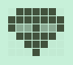</div><div><b>CABEZA GRIS</b><span class="caso">Los visitantes de Betty y Barney Hill, 1961</span><span class="antes">(<em>avispa</em>) zigzag y pares de balas</span></div></div>
      <div class="ficha"><div class="marco"></div><div><b>LUCES DE LUBBOCK</b><span class="caso">Formación de luces en arco, Texas 1951</span><span class="antes">(<em>lazo</em>) fila que da la vuelta</span></div></div>
      <div class="ficha"><div class="marco">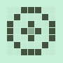</div><div><b>CÍRCULO DE CULTIVO</b><span class="caso">Los dibujos en los campos de trigo</span><span class="antes">(<em>orbitador</em>) gira y suelta 8 balas</span></div></div>
      <div class="ficha"><div class="marco">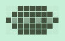</div><div><b>CIGARRO</b><span class="caso">Los ovnis alargados con ventanillas</span><span class="antes">(<em>minador</em>) deja minas</span></div></div>
      <div class="ficha"><div class="marco">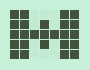</div><div><b>CABALLERO NEGRO</b><span class="caso">El satélite misterioso de la leyenda</span><span class="antes">(<em>francotirador</em>) apunta y dispara</span></div></div>
      <div class="ficha"><div class="marco">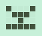</div><div><b>ANTENA ÁREA 51</b><span class="caso">Nevada, la base que no existía</span><span class="antes">(<em>torreta</em>) dispara desde el suelo</span></div></div>
      <div class="ficha"><div class="marco"></div><div><b>PEQUEÑO GRIS</b><span class="caso">El tripulante, a pie</span><span class="antes">(<em>saltarín</em>) salta hacia la oruga</span></div></div>
      <div class="ficha"><div class="marco">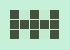</div><div><b>VALLA ÁREA 51</b><span class="caso">«Prohibido el paso»</span><span class="antes">(<em>pincho</em>) hay que saltarla</span></div></div>
    </div>
  </section>

  <section class="jefes">
    <h2>JEFES</h2>
    <div class="fichas">
      <div class="ficha"><div class="marco">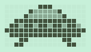</div><div><b>EL PLATILLO DE ROSWELL</b><span class="caso">Nivel 1 · Nuevo México, 1947</span><span class="antes">(<em>Coloso</em>) disparo apuntado y abanico</span></div></div>
      <div class="ficha"><div class="marco">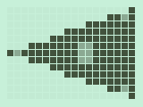</div><div><b>EL TRIÁNGULO NEGRO</b><span class="caso">Nivel 2 · Bélgica, 1990</span><span class="antes">(<em>Tenaza</em>) tiembla y embiste</span></div></div>
      <div class="ficha"><div class="marco">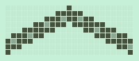</div><div><b>LA V DE PHOENIX</b><span class="caso">Nivel 3 · Phoenix, 1997, sobre la ciudad</span><span class="antes">(<em>Nodriza</em>) solo la alcanzan los cohetes</span></div></div>
      <div class="ficha"><div class="marco">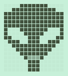</div><div><b>EL GRIS</b><span class="caso">Nivel 4 · New Hampshire, 1961</span><span class="antes">(<em>Ojo</em>) con los ojos abiertos recibe daño</span></div></div>
      <div class="ficha"><div class="marco">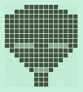</div><div><b>EL GRIS, CERRADO</b><span class="caso">Así no le haces nada</span><span class="antes">y dispara abanicos</span></div></div>
      <div class="ficha"><div class="marco">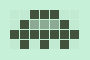</div><div><b>EL TREN DE LUCES</b><span class="caso">Nivel 5 · la cabeza…</span><span class="antes">(<em>Serpiente</em>) solo la cabeza recibe daño</span></div></div>
      <div class="ficha"><div class="marco"></div><div><b>…Y SUS VAGONES</b><span class="caso">Orbes que la siguen</span><span class="antes">frenan tus balas</span></div></div>
      <div class="ficha"><div class="marco">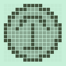</div><div><b>LA INSIGNIA DE SOCORRO</b><span class="caso">Nivel 6 · Hangar 18 · Socorro, 1964</span><span class="antes">(<em>Núcleo</em>) escudos que giran y espiral</span></div></div>
    </div>
  </section>

  <section>
    <h2>LOS SEIS EXPEDIENTES</h2>
    <div class="tabla">
      <table>
        <thead><tr><th>NIVEL</th><th>CARTEL</th><th>ESCENARIO</th><th>JEFE</th></tr></thead>
        <tbody>
          <tr><td>1</td><td class="lcdtxt">ROSWELL 1947</td><td>Espacio, planeta con anillo</td><td>El platillo de Roswell</td></tr>
          <tr><td>2</td><td class="lcdtxt">BELGICA 1990</td><td>Cordillera</td><td>El Triángulo Negro</td></tr>
          <tr><td>3</td><td class="lcdtxt">PHOENIX 1997</td><td>Ruinas de la ciudad (en tierra)</td><td>La V de Phoenix</td></tr>
          <tr><td>4</td><td class="lcdtxt">LOS HILL 1961</td><td>Cueva</td><td>El Gris</td></tr>
          <tr><td>5</td><td class="lcdtxt">LUBBOCK 1951</td><td>Asteroides</td><td>El tren de luces</td></tr>
          <tr><td>6</td><td class="lcdtxt">HANGAR 18</td><td>Base con tuberías</td><td>La insignia de Socorro</td></tr>
        </tbody>
      </table>
    </div>
  </section>

  <section>
    <h2>TU NAVE: PROPUESTAS</h2>
    <p>Mismo tamaño (7 × 5) y misma silueta de flecha que la de hoy, para que siga siendo sencilla. Solo cambian detalles.</p>
    <div class="fichas">
      <div class="ficha"><div class="marco">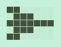</div><div><b>LA DE HOY</b><span class="caso">Sencilla y clara</span><span class="antes">Se queda si ninguna te convence</span></div></div>
      <div class="ficha"><div class="marco">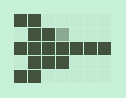</div><div><b>CON CABINA</b><span class="caso">La misma, con la cabina en tono medio</span><span class="antes">El cambio más pequeño</span></div></div>
      <div class="ficha"><div class="marco">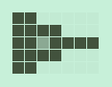</div><div><b>DELTA 84</b><span class="caso">Ala triangular de caza de los 80</span><span class="antes">Más maciza</span></div></div>
      <div class="ficha"><div class="marco">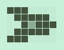</div><div><b>INTERCEPTOR</b><span class="caso">Alas hacia adelante, cabina al centro</span><span class="antes">La que más cambia</span></div></div>
    </div>
    <div class="opcion">
      <div class="pantalla">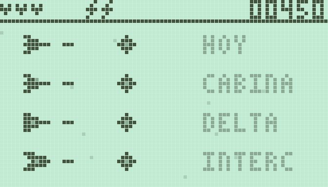</div>
      <p>Las cuatro en pantalla, disparando, para ver cuál se distingue mejor junto a un enemigo.</p>
    </div>
  </section>

  <section>
    <h2>LO QUE TIENES QUE DECIDIR</h2>
    <ol class="preguntas">
      <li>¿Qué portada te gusta: A, B o C? <span>También se pueden mezclar, por ejemplo el título de A con el radar de C.</span></li>
      <li>¿Te gusta la idea de que cada enemigo y jefe sea un caso real? <span>Si alguno no te convence, dime cuál y lo cambio.</span></li>
      <li>¿Ponemos el caso y el año en el cartel de cada nivel?</li>
      <li>¿Quieres que tu nave también cambie? <span>Hoy es una flecha simple; podría ser un caza de los 80 con la misma silueta.</span></li>
    </ol>
  </section>
</main>
